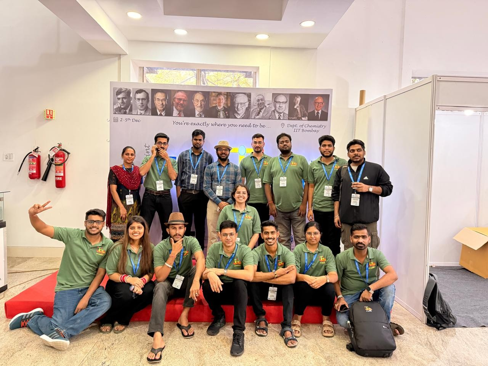

Prime Minister Research Fellow (PMRF) working at the intersection of molecular magnetism, quantum chemistry, machine learning, and generative AI-driven molecular design.
I am a PhD researcher working in the field of computational chemistry, molecular magnetism, and artificial intelligence. My research integrates quantum chemical calculations, magnetic anisotropy studies, machine learning, and generative AI approaches for the inverse design of molecular magnetic materials.
My current work focuses on lanthanide and transition-metal molecular magnets, graph neural networks, and AI-guided molecular discovery for next-generation magnetic materials.

Single-molecule magnets, magnetic anisotropy, spin dynamics, and magnetic exchange interactions.
Graph neural networks, generative AI, inverse molecular design, and machine learning for magnetic materials.
CASSCF, NEVPT2, DFT, and ab initio electronic structure calculations.